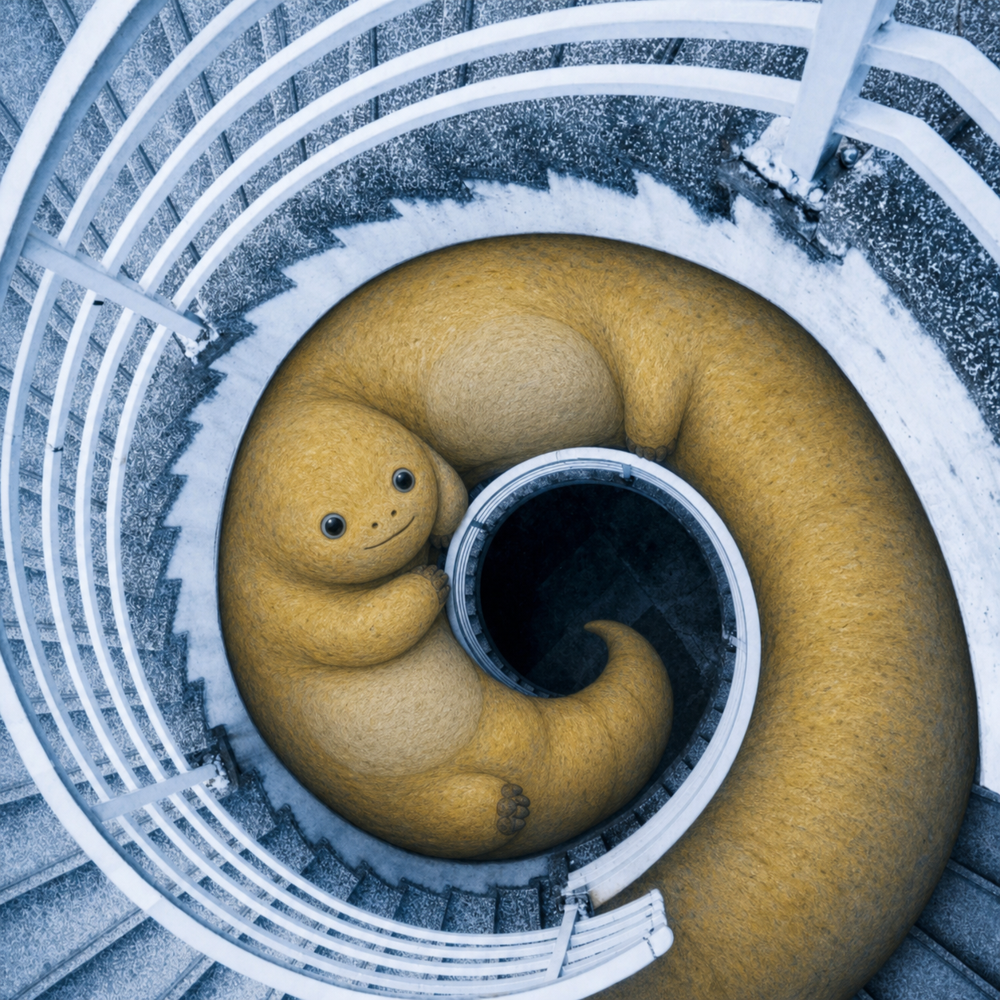

A
星空：天体替换
月亮与主要星体变成不同姿态的奶龙。柏树、村庄、山丘和天空旋涡继续承担原构图。
NON-OFFICIAL · IMAGE TRANSFORMATION SKILL
不是给图片刷一层黄色，也不是随手塞满角色。先找到画面的主角、视觉锚点和笑点，再让奶龙继承它们的位置、姿态与画风。

识别语义
建立映射
锁定构图
继承画风
01 / BEFORE & AFTER
拖动分界线查看变化。背景、镜头和空间关系应当继续工作；真正改变的是原来承担视觉焦点的对象。
月亮与主要星体变成不同姿态的奶龙。柏树、村庄、山丘和天空旋涡继续承担原构图。

整圈踏步被解释成一只俯视蜷缩的大奶龙。它保留楼梯的圆形动势、中心洞口与白色栏杆，而不是变成一条普通黄色通道。
02 / CLASSIC WORKS
03 / THE SKILL
优先识别主角、最大物体、核心道具、月亮、太阳和重复视觉符号。
让奶龙继承原元素的位置、尺度、朝向、动作、遮挡与画面功能。
文字、背景、构图、透视和未指定元素默认保持，减少模型整图重画。
油画保留笔触，照片匹配光影，像素图保持网格，漫画延续线条与网点。
OPEN SOURCE · CODEX SKILL + UNIVERSAL PROMPT